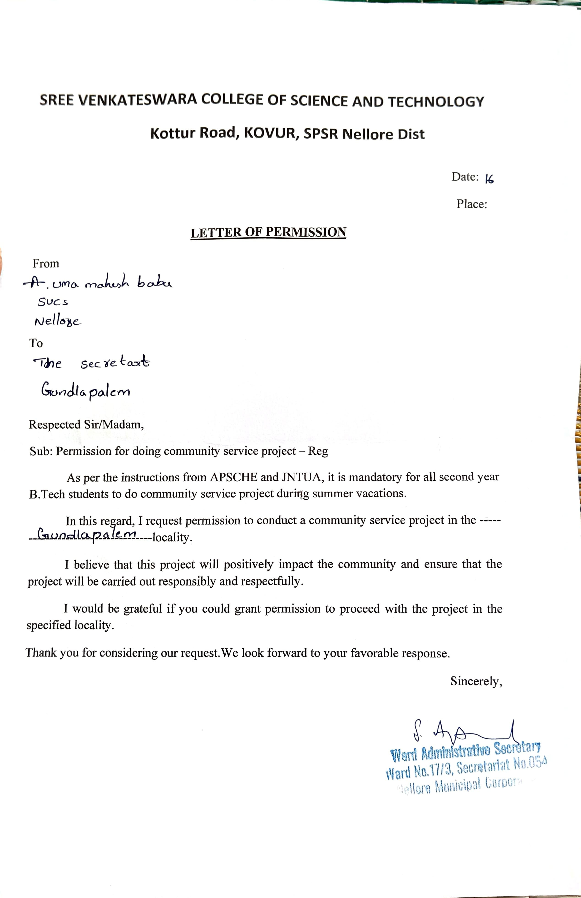
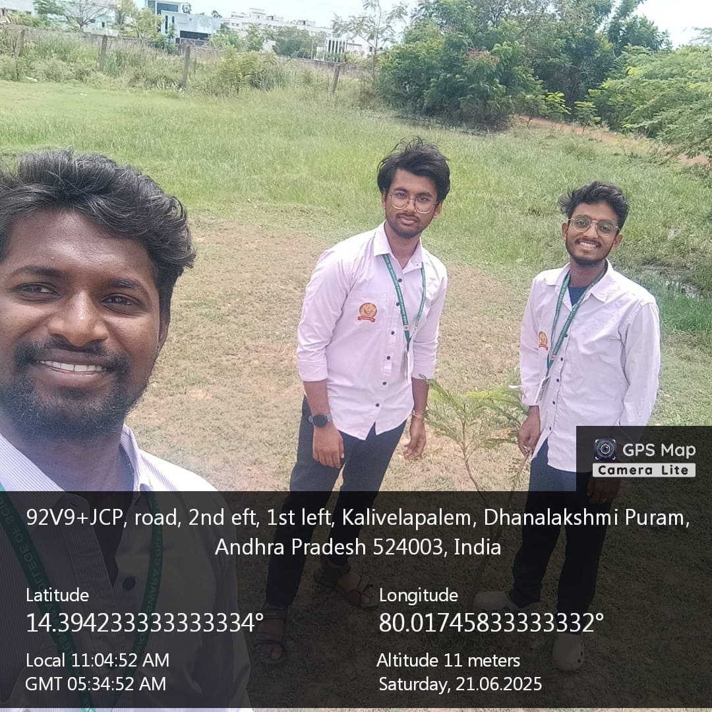

×

(from 15-05-2025 to 18-05-2025)
| Objective of the Activity Done: survey on the range of awareness of health and hygiene |
|---|
| Detailed Report: |
| Day 1: Went to sachivalayam. For getting permission to “Community Service Project”. Took permission from MRO.

|
| Day 2: I continued the survey on the second day and as part of my survey I focused on the following: • Awareness of the various diseases that are very common nowadays. • Questioned about the government plans on maintaining good health and doctor support. • Questioned about the various measures taken by the people to maintain their health Gathered information on the persons daily routine. |
| Day 3: Based on my survey and the information gathered by me I found that some people are not taking even basic measures such as daily walk, yoga, gym, exercises in their daily routine to maintain their health properly I observed that many people are not aware of the various plans provided by government to maintain an individual’s health. |
| Day 4:: continued my awareness program in the area and did the following in the things in it and the people of area received them willingly
• We gave a few suggestions about the present environment and its status. • We explained what good habits are in maintaining good health. • We explained health and habits. • Suggested a daily routine which includes various habits in maintaining health. • We gave basic ideas about personal hygiene in maintaining proper health

|